The funnel, designed from the app you like.
Every option below is anchored on the in-app prototype look (the locked tokens, the cymatic art, Fraunces and Inter, the warm cream) and built with real copy from gold, real approved quotes, and real prices lifted from the live pages. Tap "live page" on your phone to feel any of them. Quiz and birth-chart options are tap-throughs. React to anything: pick one, mix pieces, or kill a direction.
reveal-your-frequencies
Three macro-structures. Same promise, three ways in.
{kind=link}
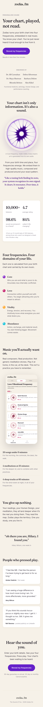
The Endel/brain.fm mobile skeleton with our warmth: promise, endorsers, mechanism shown, stats, domains, app, quotes. Look first: the endorsed-by row under the hero.
{kind=link}
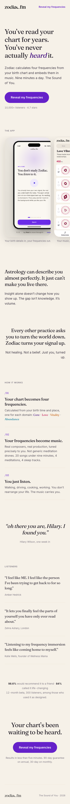
Type is the design, Co-Star discipline: a serif argument with the real app doing the showing. Look first: the hero line "You've read your chart for years. You've never actually heard it."
{kind=link}
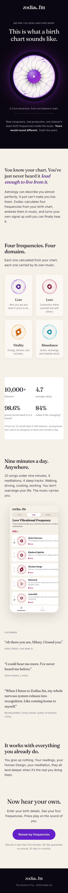
Opens dark with a real play button: "This is what a birth chart sounds like," then warms into cream editorial. Look first: press play in the hero.
begin
The form as a ritual worth your birth data. Fields and the unknown-time handling are lifted from the live begin page.
{kind=link}
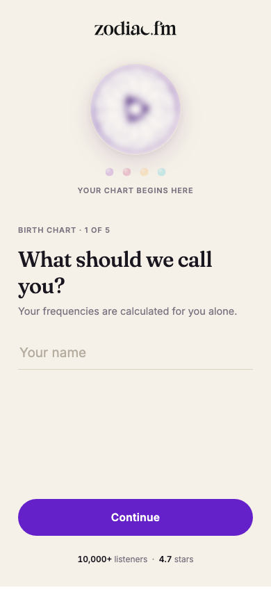
One question per screen, a forming cymatic disc that sharpens as each answer lands. Look first: the disc and the four dots reacting between steps (it's a tap-through).
{kind=link}
{kind=link}
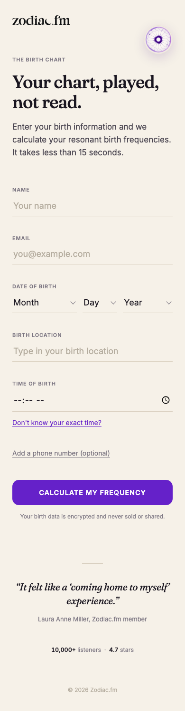
Everything on one calm editorial page: underline fields, small-caps labels, reassurance behind quiet links. Look first: the hero with the cymatic seal.
core-results
All three finally include the missing trust beat: a real playable sample with an app-style play button. Demo person throughout: born March 14, 1988, 7:42am, Denver.
{kind=link}
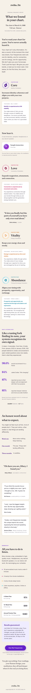
An elegant editorial document, the four discs as chapter openers, the offer as a quiet rate card. Look first: Chapter One "Core," then "Now hear it."
{kind=link}
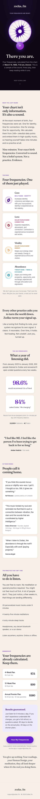
Opens dark: the glowing disc, the play button, "There you are." Sound before explanation. Look first: the first screen is the whole thesis.
{kind=link}
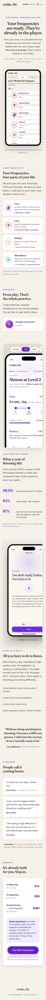
"Your frequencies are ready. They're already loaded." Real app screenshots sell it; shortest path to "this exists for me." Look first: the hero phone with the real library.
join
Keeping the feeling of the reveal instead of switching to cold commerce. Prices verbatim from the live checkout.
{kind=link}
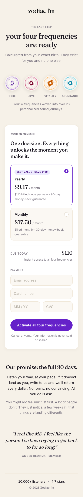
One warm column: recap discs, one quiet plan choice, payment, the guarantee written as a signed promise. Look first: "Due today $110" in the membership card.
{kind=link}
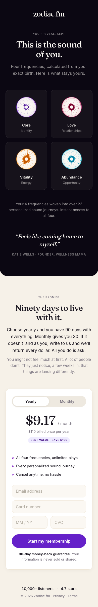
A dark panel keeps the reveal alive, then "Ninety days to live with it." carries the sell above one focused pay card. Look first: the transition into the guarantee headline.
the quiz funnel
Three design languages on the same three real beats from quiz v2 (question, give, reveal), so you compare pure design. Each is a working tap-through; images show beats 1, 2, 3.
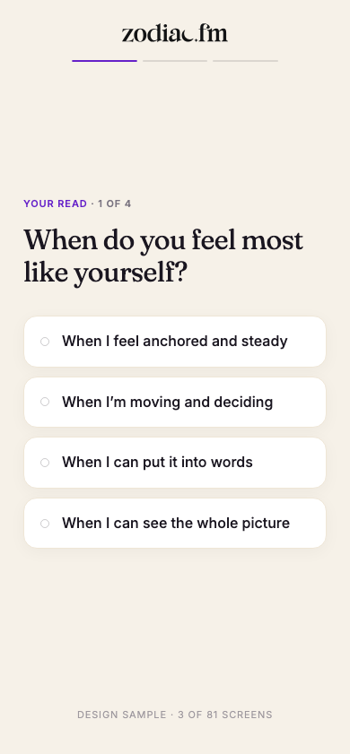
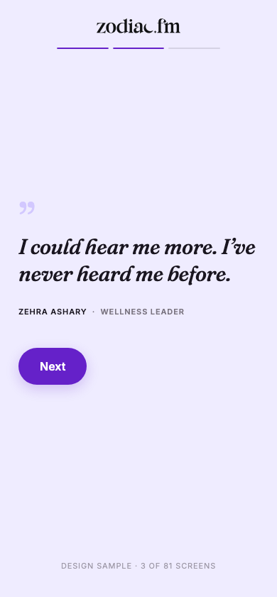
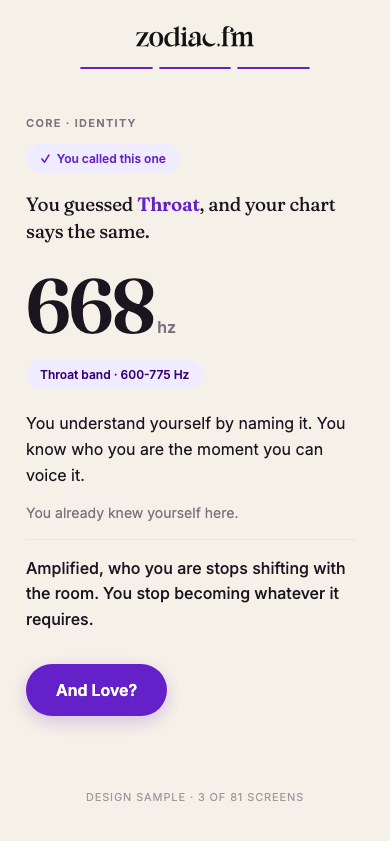
Type does everything; the give floods the screen with the violet tint like a breath. Look first: the giant Fraunces reveal on cream.
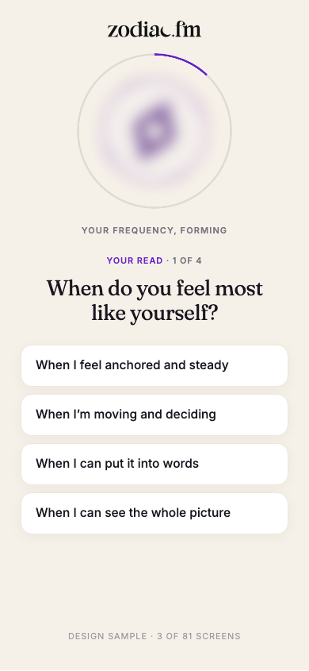
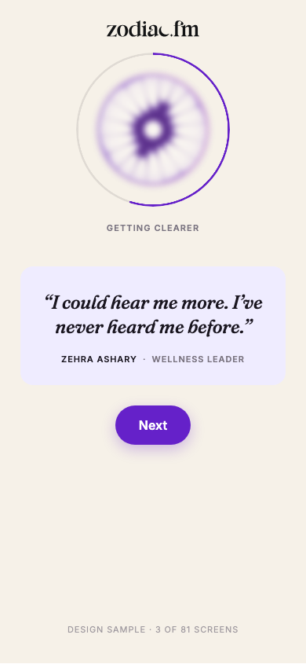
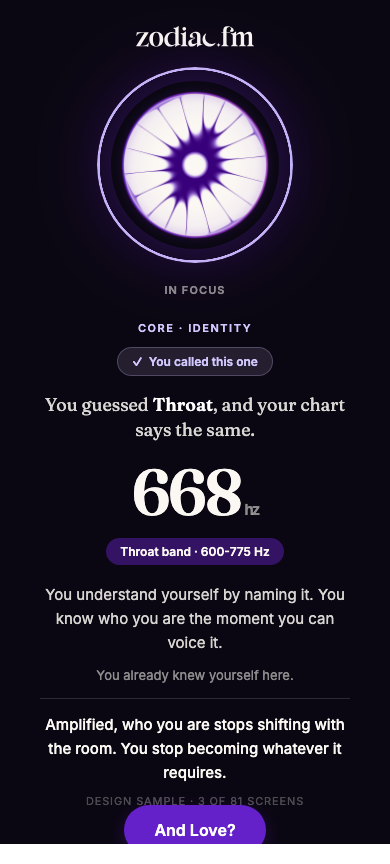
The cymatic art sharpens as you answer, then the page goes dark for the reveal. Look first: beat 3, the disc snapping into focus.
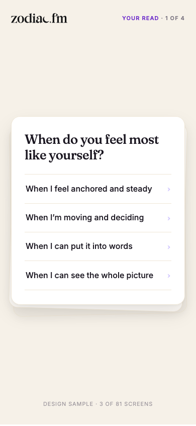
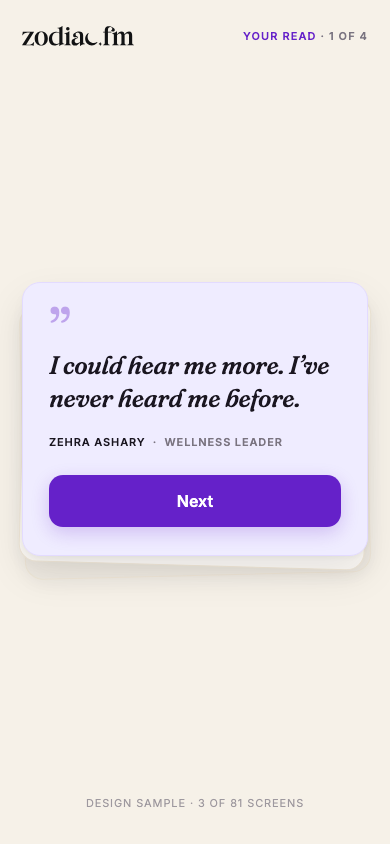
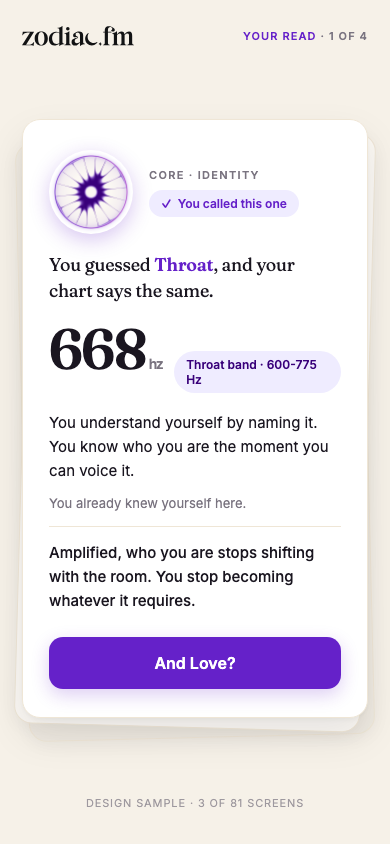
Each beat is a physical card dealt off a stack; your answer stamps purple and the card flies. Look first: tap an answer and watch the deal.
three ad types
{kind=link}
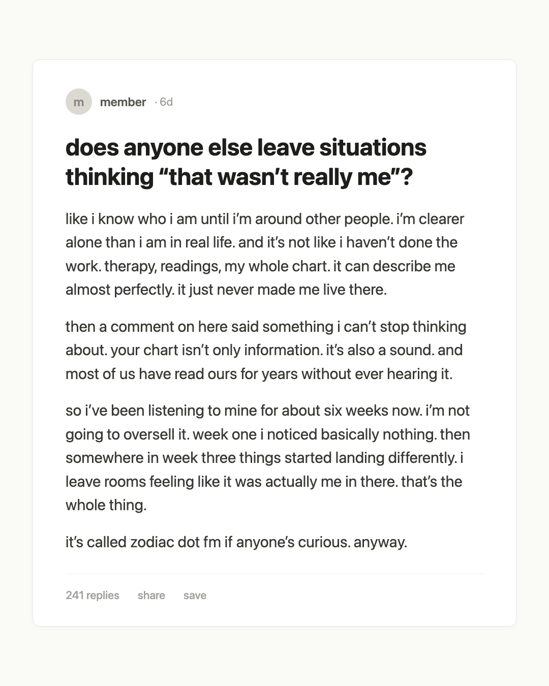
Deliberately un-designed: a real-feeling post built from verbatim gold lines, brand only in the last line. Look first: does it smell like an ad?
{kind=link}
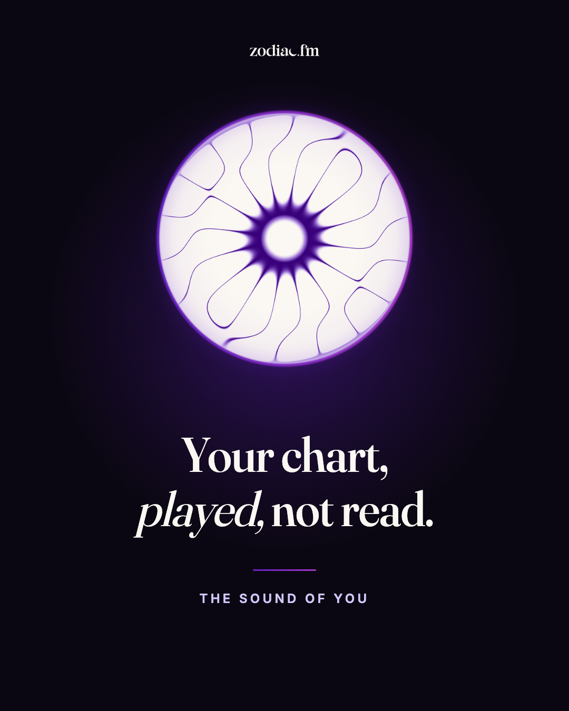
The disc glowing on dark, "Your chart, played, not read." Oura restraint. Look first: one object, one sentence.
{kind=link}
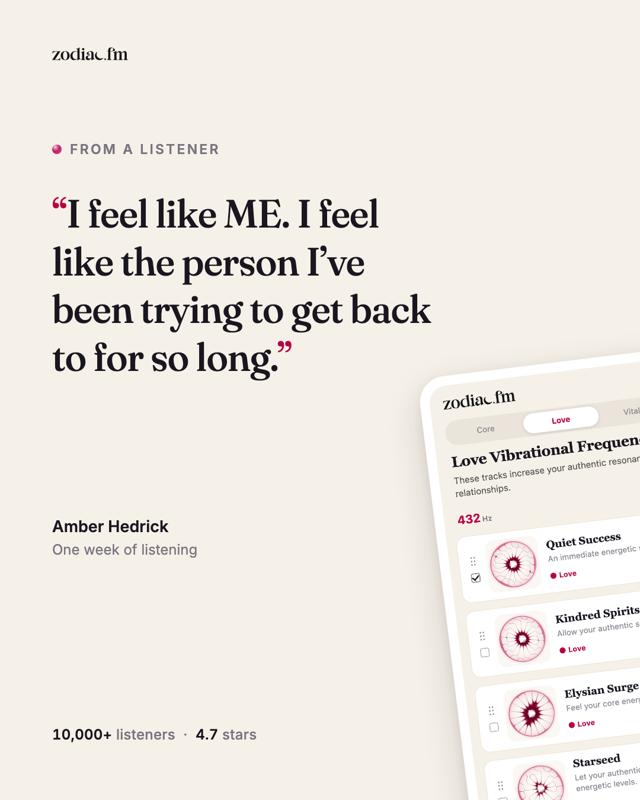
Amber Hedrick's approved quote big in Fraunces, the real Love screen tilting in. Look first: the quote and the product visibly match.
the first minute of membership
The next screen on your app list. Copy lifted from the canonical onboarding content; demo member "Hilary."
{kind=link}
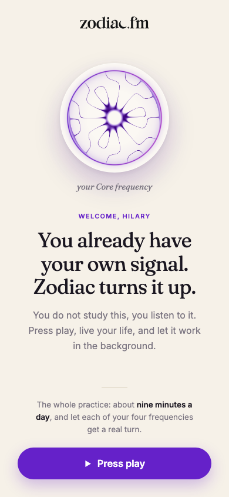
The disc, the name, the Big Idea, one button. Look first: whether one screen carries the welcome without feeling thin.
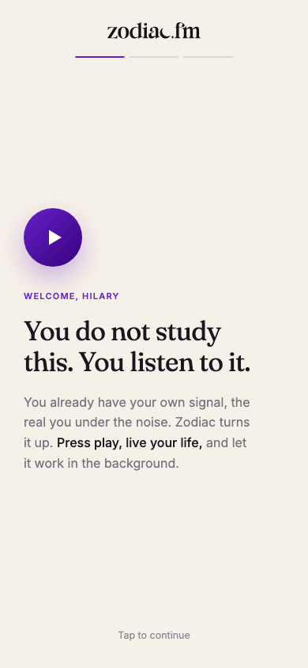
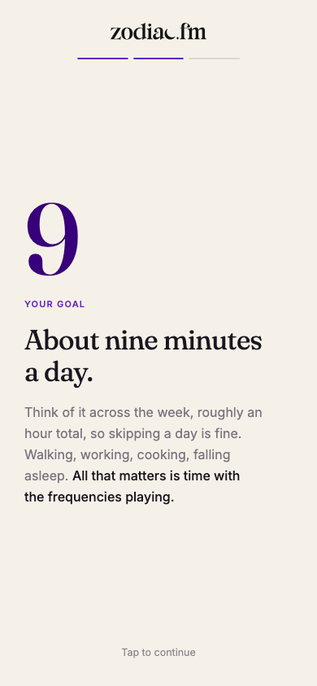
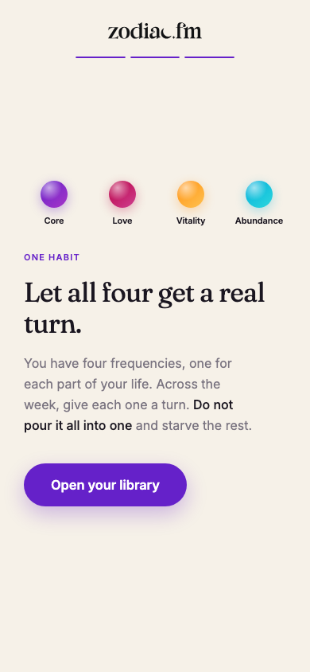
You listen, not study; a giant Fraunces "9"; the four dots and a real turn for each. Look first: beat 2, the goal reduced to one glyph.
{kind=link}
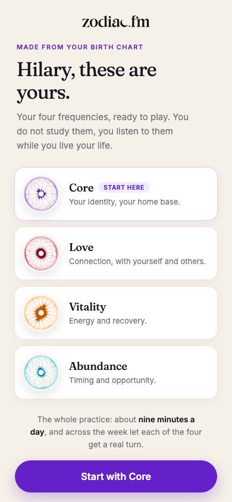
"Hilary, these are yours." The four discs revealed as a possession, Core marked "start here." Look first: does ownership make balance feel natural instead of assigned?
the welcome email, redesigned
Design mocks of your real first email ("Your Zodiac Log-In, and getting started"), voice kept, stale facts corrected: no trial language (real guarantee 90/30) and no headphones-required wording (headphones or speakers both work). Nothing publishes to Customer.io without you; production would rebuild these email-client-safe.
{kind=link}
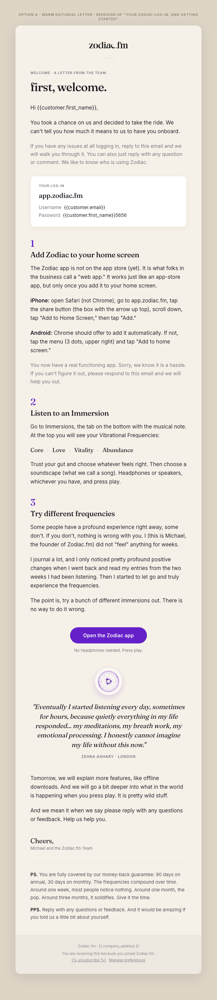
Warm cream paper, numbered steps in Fraunces, the disc as a seal above a real pull quote. Look first: the pull-quote moment; it reads like a letter, not a template.
{kind=link}
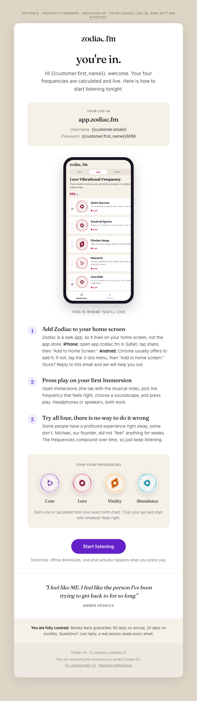
White ground, the real app in a phone frame, three short beats, the four discs as "your four frequencies." Look first: the four-disc row doing the work an icon grid would fake.